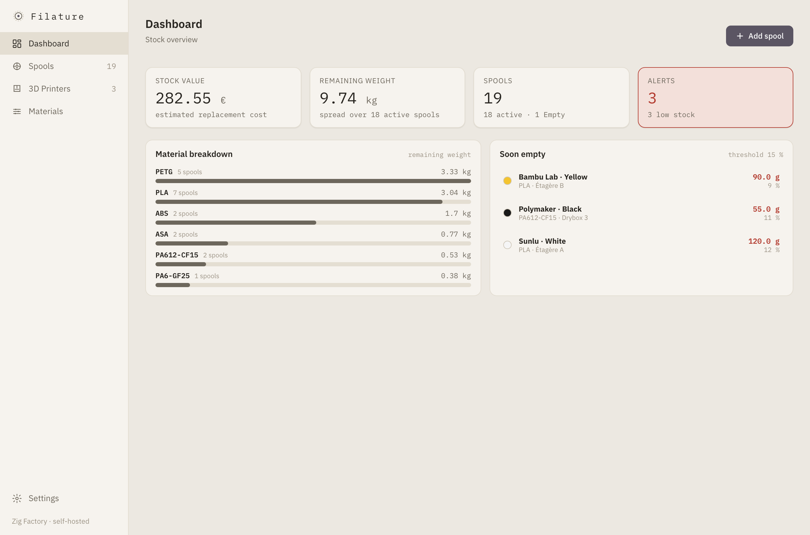
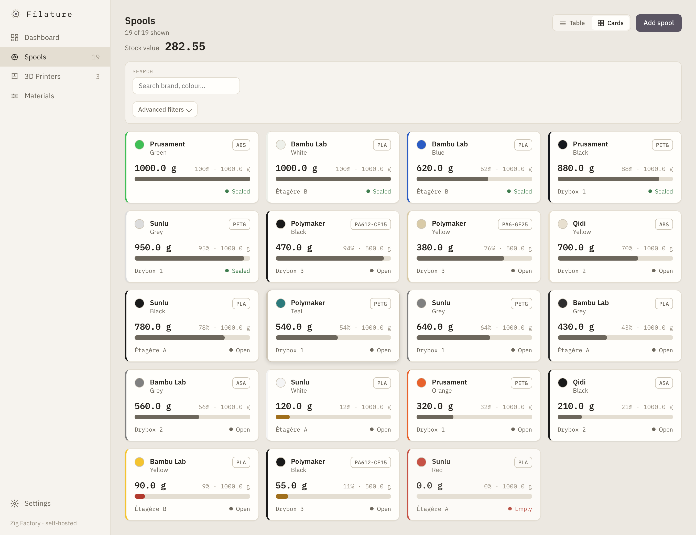
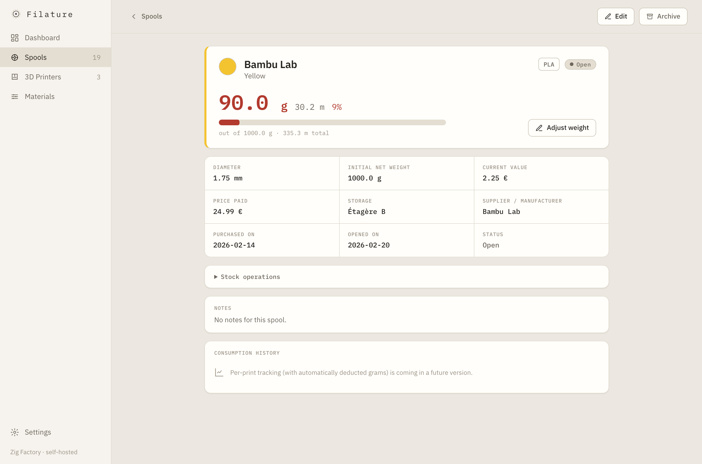
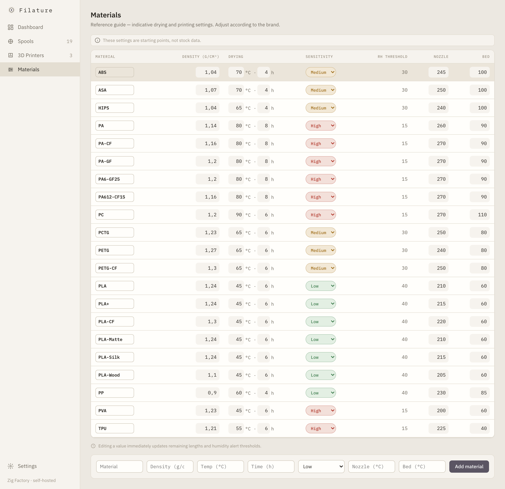
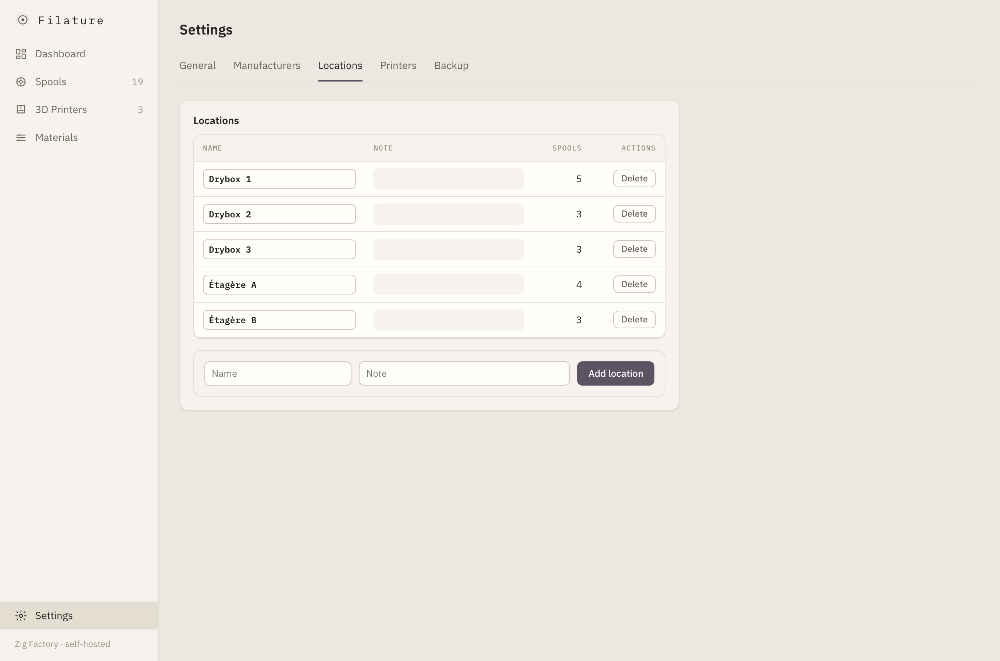
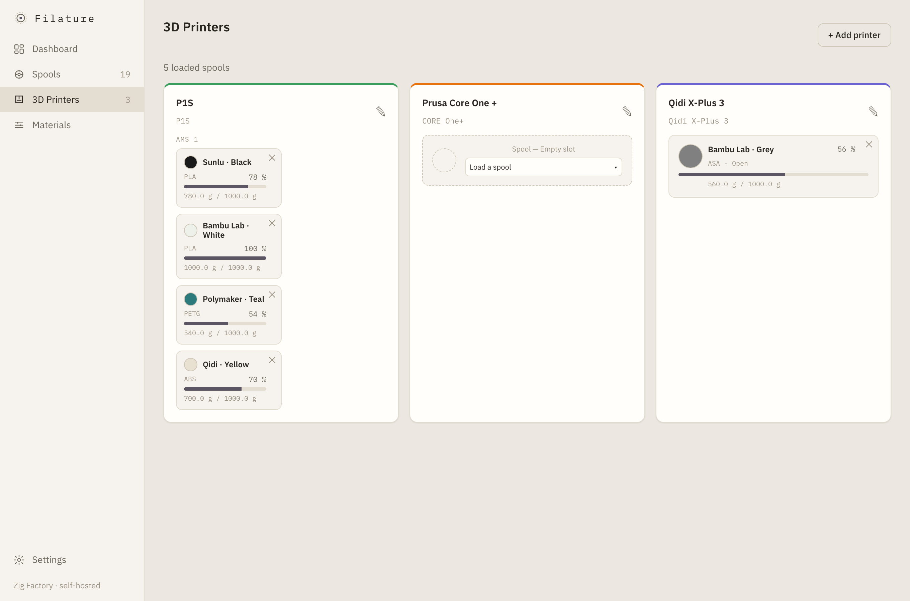
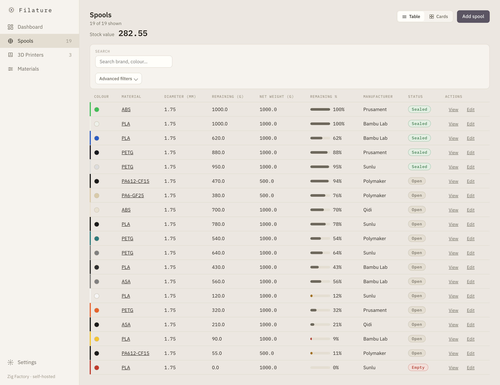
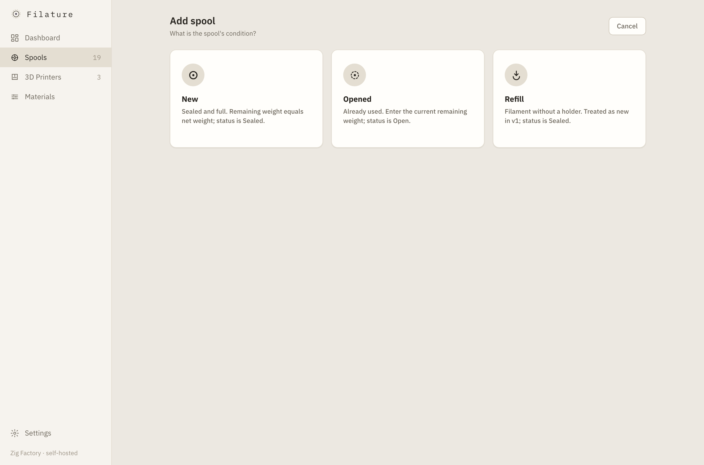
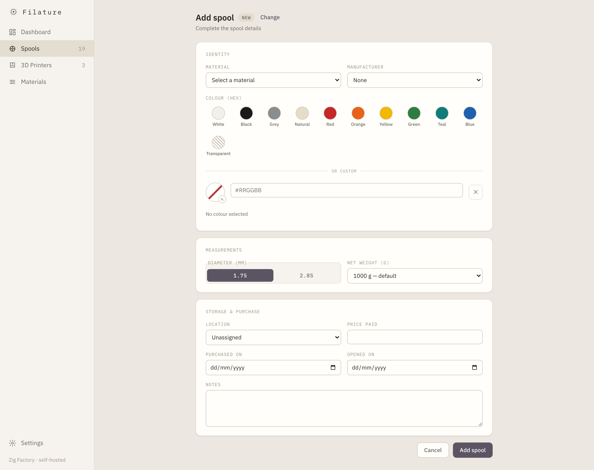
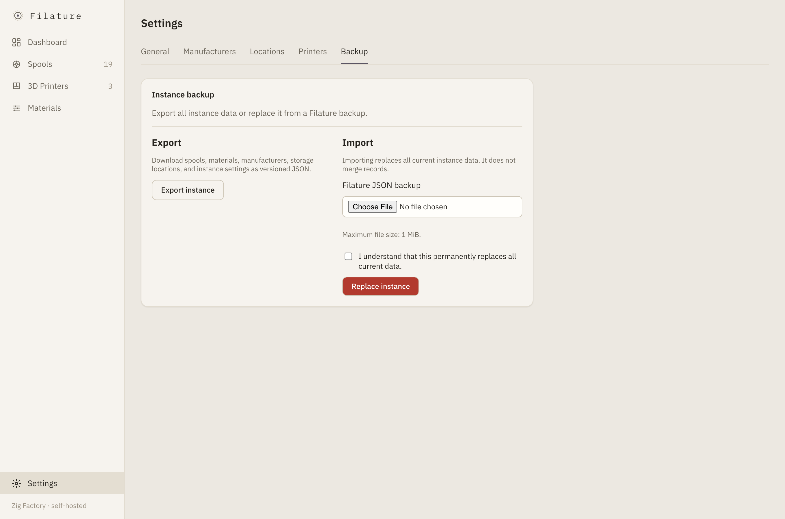

Dashboard
See stock value, remaining weight, spool counts, low-stock alerts, stock split by material, and the spools closest to empty.
A workshop instrument, not another cloud service
A self-hosted filament stock manager for your 3D-printing workshop — track every spool, weight, value and printer from one calm dashboard.

Features
From the first sealed spool to the last few metres, Filature keeps workshop data useful without turning it into administrative work.
See stock value, remaining weight, spool counts, low-stock alerts, stock split by material, and the spools closest to empty.
Filter and sort table or card views, edit remaining weight inline, and use a two-screen add wizard. Follow the complete Sealed → Open → Empty → Archived lifecycle.

Read remaining grams, calculated metres and percentage at a glance, with a weight gauge, identity, purchase information, and notes.

Edit density, drying parameters, humidity sensitivity, and default nozzle and bed temperatures in one source of truth.

Model shelves, dryboxes, and every other physical place where spools are stored.

Represent Bambu multi-AMS topology, multiple print heads, feed modes, and the spool loaded in each slot with its colour pastille.

Tabbed controls for the low-stock alert threshold, locale, and theme.
Back up or restore the complete instance as a portable file from the UI.
Use Filature in English or French, with equal care in light and dark modes.
Screenshots




Installation
Filature is a single self-contained Rust binary with templates, static assets, i18n catalogs, and migrations embedded. It uses PostgreSQL. HTTPS is terminated by a separate reverse proxy.
PostgreSQL is the larger memory consumer. A Raspberry Pi 4 with 4 GB is comfortable; 2 GB is workable for PostgreSQL, one app instance, and the OS. A personal database is typically only tens of megabytes.
The published image is multi-architecture. On a Pi, Docker automatically pulls the arm64 variant:
docker compose -f docker-compose.prod.yml up -d --pull alwaysUse a Compose file referencing ghcr.io/ziggornif/filature:latest, such as docker-compose.prod.yml.
git clone https://github.com/ziggornif/filature.git
cd filature
cp .env.example .envSet POSTGRES_PASSWORD in .env, then generate the mandatory Argon2 password hash:
docker compose run --rm app hash-password '<your-password>'docker compose up -d --pull always
docker compose ps
curl -I http://localhost:${APP_PORT:-8080}Point your HTTPS reverse proxy at the published port.
git clone https://github.com/ziggornif/filature.git
cd filature
cp .env.example .env
# Set POSTGRES_PASSWORD in .envdocker compose up -d --build
docker compose ps
curl -I http://localhost:${APP_PORT:-8080}Point your HTTPS reverse proxy at the published port.
| Variable | Purpose |
|---|---|
POSTGRES_USER | PostgreSQL role used by Filature. |
POSTGRES_PASSWORD | PostgreSQL password; set this before starting. |
POSTGRES_DB | PostgreSQL database name. |
APP_PORT | Host port published for the application. |
APP_BIND | Address and port the application binds to. |
FILATURE_DEFAULT_LOCALE | Default UI locale: fr or en. |
FILATURE_AUTH__USERNAME | Mandatory shared operator username. |
FILATURE_AUTH__PASSWORD_HASH | Mandatory Argon2 PHC password hash from filature hash-password. |
FILATURE_<SECTION>__<KEY> | Override any nested configuration key; double underscores separate levels. |
Filature has a mandatory single-credential login gate. It refuses to boot without FILATURE_AUTH__USERNAME and FILATURE_AUTH__PASSWORD_HASH, and default-denies every path without a valid session. This is one shared operator credential—not multi-user access or roles. Filature does not provide TLS; terminate HTTPS at your reverse proxy and keep the application port private.
Use the in-app Export / Import tab for a portable full-instance backup, or work directly with PostgreSQL:
# Backup
docker compose exec db pg_dump -U filature filature > backup-$(date +%F).sql
# Restore
cat backup.sql | docker compose exec -T db psql -U filature -d filatureContributing
Bug reports, focused pull requests, and careful improvements are welcome. The contributor guide covers local setup, tests, architecture, i18n, and the project workflow.